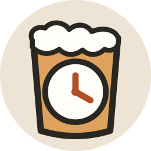
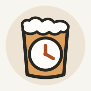
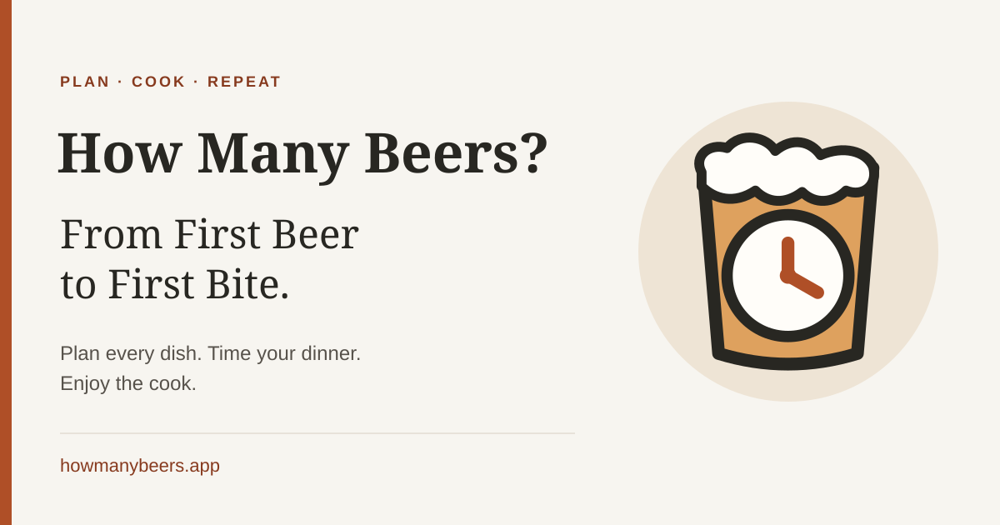

How Many Beers?
From First Beer to First Bite. · Approved Classic Dial identity · Review assets

Primary · circle highlightDark background
Monochrome
Recognition at actual size
16 px
32 px
48 px

180 px · AppleOpen Graph / X card
